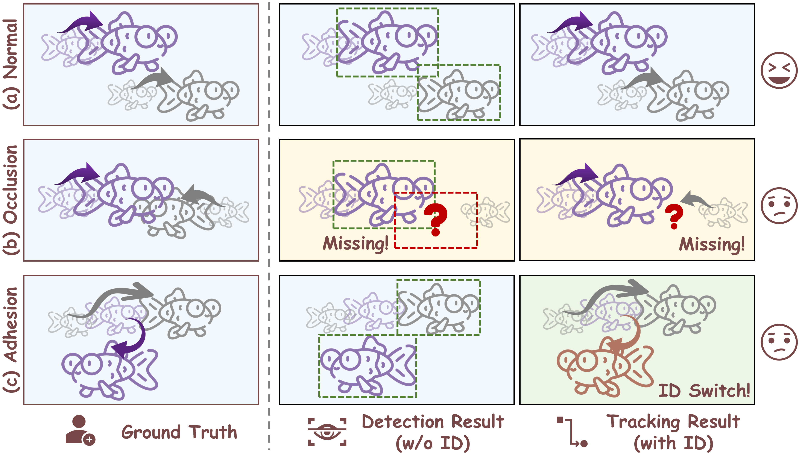
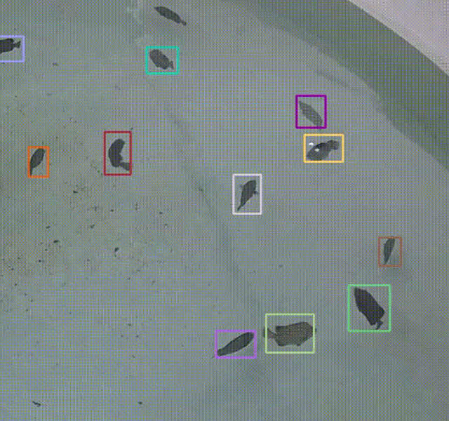
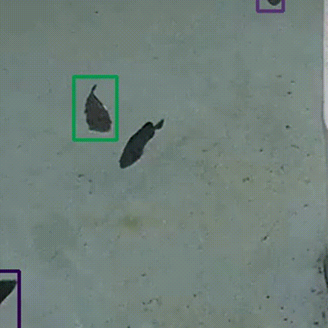

Tracking fish in dense aquaculture environments poses significant challenges due to minimal inter-individual variance, rapid morphological deformations, and frequent occlusions. Recent state-of-the-art methods push accuracy boundaries by employing heavy Separated Detection and Embedding (SDE) paradigms alongside complex association metrics. However, their exorbitant computational overhead prohibits real-time deployment on edge devices.
To bridge the gap between academic benchmarks and resource-constrained industrial deployment, we propose TIDE, a framework for Tracking Identities with Dual-branch Elasticity based on a Joint Detection and Embedding (JDE) paradigm. TIDE offers scalable architectural configurations to flexibly address diverse hardware constraints under a unified design philosophy. Furthermore, we introduce the Adaptive Geometric Correspondence IoU (AGCIoU). This minimalistic association mechanism circumvents the need for computationally expensive re-identification modules and complex morphological metrics. Instead, it leverages robust spatial and geometric cues to effectively maintain identities through severe occlusions with minimal overhead.
Extensive evaluations on challenging stress-test datasets demonstrate that TIDE establishes a superior accuracy-efficiency trade-off. Specifically, the framework achieves highly competitive tracking accuracy with a Higher Order Tracking Accuracy (HOTA) score of 28.43 while operating at a remarkably efficient 20.47G FLOPs. This exceptional efficiency represents a 38.7-fold computational reduction compared to standard heavy-backbone MOT trackers, proving its viability for real-world edge deployment.
| Method | Params ↓ | FLOPs ↓ | HOTA ↑ | IDF1 ↑ | MOTA ↑ | IDs ↓ |
|---|---|---|---|---|---|---|
| SORT† | 99.00M | 793.21G | 22.73 | 23.91 | 48.67 | 2599 |
| ByteTrack† | 99.00M | 793.21G | 19.18 | 19.37 | 40.17 | 2325 |
| OC-SORT† | 99.00M | 793.21G | 22.99 | 24.14 | 48.44 | 2674 |
| FairMOT | 16.55M | 72.93G | 27.26 | 29.68 | 60.74 | 2456 |
| CMFTNet | 45.08M | 137.77G | 27.08 | 29.93 | 61.90 | 2716 |
| TrackFormer | 42.95M | 143.43G | 26.51 | 26.73 | 43.42 | 899 |
| TIDE-L (Ours) | 5.79M | 20.47G | 28.43 | 36.29 | 47.84 | 574 |
| TIDE-S (Ours) | 32.59M | 90.13G | 29.98 | 39.01 | 54.74 | 908 |
Notes: † indicates SDE-based methods using shared weights. -S/-L denote the Scalable and Lightweight branches of TIDE, respectively.
git clone ***anonymous***.git
cd TIDE
conda env create -f requirements.yaml
conda activate TIDEsh experiments/exp.shPretrained Models, Datasets, Acknowledgements, and Citation are Not available during Anonymous review.